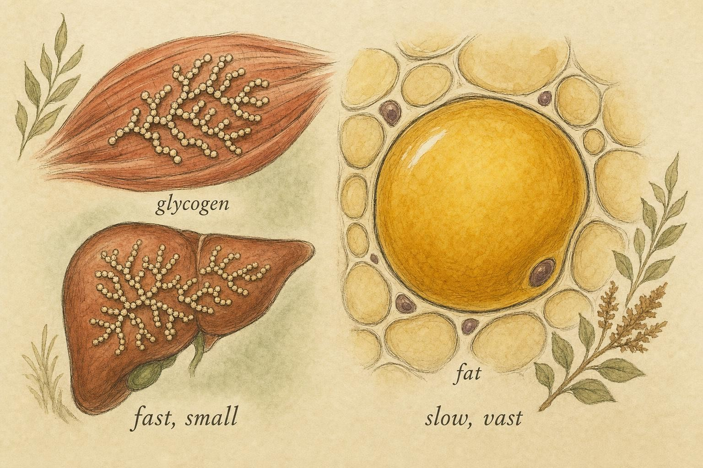
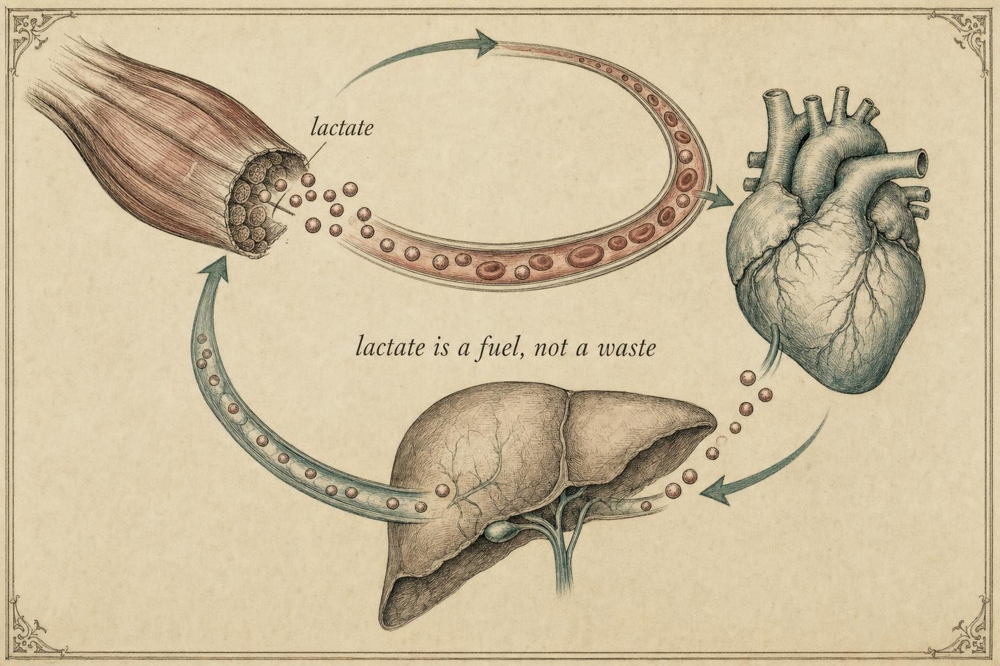
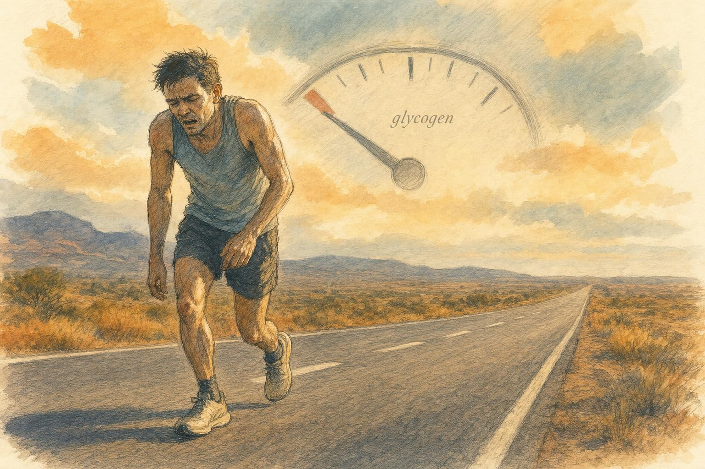

Choosing the Fuel: Glycogen, Fat, Thresholds, and the Crossover
Why your body reaches for carbohydrate when the effort is hard and for fat when it is easy, and what happens when the tank runs dry.
Picture two efforts on the same afternoon. In the morning you take a long, unhurried walk along a river, chatting the whole way, barely warm. In the afternoon you sprint the last two hundred meters to catch a departing bus, lungs burning, legs heavy within seconds. Both efforts are powered by the same currency, a molecule called adenosine triphosphate, which we will spell out in full once and then call ATP for short. Yet the raw materials your body burns to rebuild that currency are strikingly different in the two cases. The walk runs largely on fat. The sprint runs almost entirely on carbohydrate. Your body made that switch without asking you.
Add two more scenes to the picture. A lifter loads a barbell and grinds out a single heavy set of five repetitions, breath held, face reddening, the whole effort over in fifteen seconds. A marathoner settles into a pace she can just barely hold for two and a half hours, sipping a carbohydrate drink every few kilometers because she knows, from hard experience, what happens if she does not. All four of these people, the walker, the sprinter, the lifter, and the marathoner, are running the exact same biochemical machinery. What differs is which parts of that machinery get called upon, in what proportion, and for how long. By the end of this chapter you will be able to look at any of the four and explain, from first principles, exactly why their bodies chose the fuel mix they did.
This chapter is about the logic behind that switch. It is the fuel-selection heart of the course, and once you understand it, a great deal of what athletes, coaches, and diet books argue about will suddenly make mechanistic sense.
Two tanks, two very different fuels
Start with the two stored fuels themselves, because their physical properties explain almost everything that follows. The first is glycogen, the stored form of carbohydrate. Glycogen is a large, branching molecule assembled from thousands of glucose units linked end to end and coiled outward from a small core protein. The branching is not decorative. Because so many glucose units sit exposed at the tips of the branches, the enzyme that dismantles glycogen, called glycogen phosphorylase, can chip glucose units off from many branch ends simultaneously, which is a large part of why glycogen can be mobilized so quickly compared with, say, breaking apart stored fat. Your body keeps glycogen in two main depots, inside skeletal muscle and inside the liver, and confusing those two depots is probably the single most common factual error in casual writing about fuel and fatigue, so it is worth taking the distinction slowly and getting it exactly right.
Muscle glycogen and liver glycogen are not the same tank
Muscle glycogen is stored directly inside the muscle fibers that will eventually burn it. A typical adult holds somewhere in the range of three hundred to four hundred grams of glycogen across all of skeletal muscle combined, though the exact figure depends heavily on total muscle mass, training history, and recent diet, and an endurance athlete who has deliberately eaten to maximize glycogen through a practice called carbohydrate loading can push considerably higher than that. Muscle glycogen is, in a real sense, private property. The fiber that stores it is the fiber that spends it. There is essentially no mechanism for a muscle cell to export that glucose back out into the bloodstream for other tissues to use, because the enzyme that would allow this, glucose-6-phosphatase, is essentially absent from skeletal muscle. Muscle glycogen exists for one job only: to fuel the contraction of the very muscle that holds it, released on demand, at whatever rate that contraction requires.
Liver glycogen is a much smaller store, typically somewhere on the order of eighty to one hundred grams in a well-fed adult, small enough that a single overnight fast draws it down substantially and a day or two of fasting can nearly empty it. Unlike muscle, the liver does possess glucose-6-phosphatase, so hepatocytes, the liver's main cells, can break glycogen down and release the resulting free glucose directly into the bloodstream. Liver glycogen is not there to power the liver's own contraction, since the liver does not contract at all. Its job is to defend blood glucose concentration for the whole body, and above all for the brain and the rest of the central nervous system, which under ordinary conditions run overwhelmingly on circulating glucose and cannot use fatty acids directly as fuel. When you have not eaten for several hours, it is liver glycogen breaking down, not muscle glycogen, that keeps your blood glucose from drifting down into a range where concentration, mood, and coordination begin to suffer.
This distinction carries directly into exercise. A contracting muscle draws first and most heavily on its own local glycogen supply, topped up by glucose pulled in from the blood. That blood glucose pool, in turn, is defended by liver glycogen breakdown, so the liver works continuously in the background to keep the fuel supply line to the muscle from running dry, even though the liver itself never contracts a single fiber and never directly powers a stride, a pedal stroke, or a barbell lift. A useful mental picture is an athlete's personal, private fuel can buried inside the very engine it feeds, that is muscle glycogen, alongside a tanker truck idling nearby and continuously topping up the shared blood glucose pool that every tissue in the body draws from, including the brain, that is liver glycogen. Muscle glycogen is the dominant direct fuel for the muscle itself during hard efforts, precisely because it sits right where it is needed and can be broken down fast enough to meet steep, sudden demand; liver glycogen's job is almost entirely about protecting circulating blood glucose rather than about directly fueling muscle contraction. Mixing the two up will cause you to misread almost everything that follows in this chapter, including the true mechanism behind hitting the wall, which we return to later.
Put the two stores together and a well-fed adult holds somewhere in the range of four hundred to five hundred grams of total body glycogen, which amounts to roughly sixteen hundred to two thousand kilocalories of energy, depending on body size, training status, and recent diet. That is enough to power a couple of hours of hard endurance work and no more, and it is precisely why competitive endurance athletes plan their carbohydrate intake so deliberately before, during, and after long efforts.
The second fuel is fat, stored as triglyceride in adipose tissue and, in smaller amounts, as droplets tucked between and within the muscle fibers themselves, a pool called intramuscular triglyceride that sits conveniently close to the mitochondria that will burn it. Here the numbers are almost comical by comparison with glycogen. Even a lean adult weighing around seventy kilograms with a body fat percentage in the healthy range carries roughly eight to twelve kilograms of stored fat, which works out to somewhere in the neighborhood of seventy thousand to one hundred thousand kilocalories, enough in principle to walk for days without ever running out. Fat is also far more energy-dense: each gram of fat yields about nine kilocalories, against roughly four for carbohydrate, and glycogen is stored with a substantial amount of water bound to it, making it heavier still per usable calorie carried.
So if fat is so abundant and so energy-dense, why not simply burn fat all the time and spare the precious, limited glycogen? The answer is the single most important idea in this chapter: the rate at which each fuel can supply energy differs enormously. Fat is a vast, slow reservoir. Carbohydrate is a small, fast one. When demand is gentle, the slow fuel keeps up comfortably. When demand is steep, only the fast fuel can meet it. A simple arithmetic comparison makes the stakes concrete. A marathon runner covering forty two point two kilometers typically expends somewhere in the range of twenty six hundred to three thousand kilocalories, well within what the fat store alone could theoretically supply. Yet marathoners still hit the wall regularly, still carry gels, and still obsess over carbohydrate loading. The ceiling that matters is almost never the size of the fat tank. It is how fast fat can be poured out of it, a question we turn to next.

The two tanks differ not just in size but in how fast they can pour." data-image-idx="0" style="display:block;max-width:100%;max-height:75vh;height:auto;width:auto;margin:0 auto;cursor:pointer;">Why rate matters more than size
To turn either fuel into usable ATP, the muscle has two broad options. It can break glucose down without using oxygen, a fast pathway called anaerobic glycolysis, which yields ATP quickly but only from carbohydrate. Or it can burn fuel completely using oxygen inside the mitochondria, a pathway called oxidative phosphorylation, which is far more efficient in total ATP yield but proceeds more slowly and depends on oxygen delivery. Fat can only be burned through the oxidative pathway; it has no anaerobic shortcut. Carbohydrate can travel both routes (Hargreaves & Spriet, 2020).
This is the crux. Because fat has no fast lane, its maximum rate of energy delivery is capped by how quickly oxygen can be delivered and mitochondria can process it. When the intensity of your effort demands ATP faster than that ceiling allows, the shortfall can only be covered by carbohydrate, either burned oxidatively at a higher rate or broken down anaerobically for a rapid top-up. Intensity, in other words, forces the fuel choice.
How fast can each pathway make ATP, and at what cost in efficiency
It helps to put real relative numbers on the phrase "fast lane versus slow lane." Muscle can regenerate ATP through three pathways, and across a huge body of exercise physiology research they trade speed against total yield in a strikingly consistent pattern. The fastest pathway of all is the breakdown of a stored high-energy compound called phosphocreatine, which regenerates ATP by transferring a phosphate group directly onto adenosine diphosphate, or ADP, the spent form of ATP left over once a phosphate group has already been used. This handoff requires no oxygen and no multi-step chemical pathway, just a single, near-instantaneous enzymatic transfer, so it can support the very highest power outputs the body can produce. Its drawback is capacity, not speed: stored phosphocreatine in muscle is exhausted within roughly ten to fifteen seconds of a maximal effort such as a heavy barbell lift or an all-out short sprint.
Anaerobic glycolysis, the pathway that breaks glucose or glycogen-derived glucose units down to pyruvate and then to lactate without using oxygen, is the second fastest route to ATP and can sustain a high power output for longer than the phosphocreatine system, typically on the order of tens of seconds to a couple of minutes of near-maximal effort. It pays for that speed with poor fuel economy: breaking one molecule of glucose down anaerobically nets only two molecules of ATP. Oxidative phosphorylation, by contrast, is the slowest of the three systems both to ramp up and to reach its own ceiling, constrained by how quickly the heart and lungs can deliver oxygen and how quickly mitochondria can put it to use, but it is by far the most efficient, wringing on the order of thirty molecules of ATP from that same glucose molecule when it is fully oxidized, and it is the only pathway that can also process fat, extracting even more total ATP per gram of fuel from a fatty acid than from carbohydrate, albeit still only at that comparatively slow, oxygen-limited rate.
This speed versus yield tradeoff is the entire reason fuel choice tracks intensity so tightly. A heavy lift or a maximal sprint needs an enormous burst of power for a few seconds, so the body accepts the poor fuel economy of phosphocreatine and anaerobic glycolysis in exchange for sheer speed. A gentle walk needs comparatively little power sustained over a long time, so the body happily takes the slower but vastly more efficient oxidative route and, given the choice, prefers to spend abundant fat rather than scarce carbohydrate. Everything in between, an easy jog shading into hard interval repeats, is a sliding blend of these two logics, and the crossover concept, taken up next, describes exactly how that blend shifts as intensity climbs.
Consider four everyday efforts through this lens. An easy jog, comfortable enough to hold a conversation, sits well below the crossover point defined in the next section; oxygen delivery comfortably matches ATP demand, and fat can supply the larger share of energy through steady oxidative phosphorylation, with muscle glycogen barely touched. A set of hard interval repeats, run at a pace sustainable for only a few minutes, pushes ATP demand far above what oxidative fat burning alone can supply, so the muscle leans hard on glycogen, burned both oxidatively at a high rate and anaerobically through glycolysis, with rising blood lactate as the visible signature of that shift. A single heavy set in the weight room, a handful of maximal-effort repetitions lasting perhaps ten to twenty seconds, draws first on phosphocreatine and then, as that tiny reserve empties within seconds, on anaerobic glycolysis fed by muscle glycogen; fat contributes essentially nothing to a heavy lifting set, because the effort is simply too brief and too forceful for the slow oxidative machinery to spin up in time. A marathon occupies yet another point on the map: run for two hours or more at or somewhat below an experienced runner's lactate threshold, it draws on both fuels throughout, leaning more on fat than the interval session would, but still depending on a steady contribution from carbohydrate that, as later sections of this chapter explain, can eventually run short altogether.
The crossover point
In 1994, exercise physiologists George Brooks and Jacques Mercier gave this intensity-driven switch a name and a framework: the crossover concept (Brooks & Mercier, 1994). Their central claim is elegant. If you plot the share of energy coming from fat and the share coming from carbohydrate as you gradually raise exercise intensity, the two lines cross. At low intensities, fat supplies the larger fraction. As intensity climbs, fat's share falls and carbohydrate's share rises, until at some point the two are equal. That intensity is the crossover point. Above it, carbohydrate dominates; below it, fat does. It is worth being explicit that neither fuel is ever fully switched off. Even during an all-out sprint, a trickle of fat continues to be oxidized somewhere in the body, and even at complete rest, a small amount of carbohydrate is being burned alongside fat. The crossover concept describes a continuous shift in proportion across the whole intensity range, not an on-off toggle between two discrete states.
Notice a subtlety that trips up many people. The crossover concept is about proportions, not absolute amounts, and the two are easy to confuse. As you exercise harder, the absolute amount of fat you burn per minute does not simply fall from the start. It rises at first, because your whole energy expenditure is climbing. Only past a certain intensity does absolute fat oxidation begin to decline even as total energy demand keeps rising. Meanwhile carbohydrate's share climbs steadily. So you can be burning more fat per minute during a moderate jog than during a slow stroll, while fat's percentage of the total has already dropped. Keep the distinction between share and amount firmly in mind; nearly every popular misunderstanding of the "fat-burning zone" comes from blurring it.
Physiologists sometimes use a related but distinct term for the intensity at which the absolute rate of fat burning, measured in grams per minute rather than as a percentage, reaches its peak: Fatmax. For most people, Fatmax falls somewhere in the broad range of roughly forty five to sixty five percent of VO2max, an intensity that usually feels comfortable and conversational, similar to an easy jog or a brisk walk. The crossover point, where fat's and carbohydrate's percentage shares are exactly equal, typically sits at a somewhat higher intensity than Fatmax, because fat oxidation rises to a broad hill and then declines only gradually at first even as carbohydrate's share is already climbing quickly. Both ideas describe the same underlying curve from two different angles, one asking where the absolute peak sits and the other asking where the two proportions cross, and both undercut the popular marketing idea of one single, narrow "fat-burning zone." Fat oxidation traces a wide, gently rounded hill across a broad range of low to moderate intensities, not a narrow window that a person must hit precisely to "burn fat."
What the tracer studies actually showed
The most rigorous quantification of these shifts came a year before Brooks and Mercier's synthesis, from Jeffrey Romijn and colleagues (Romijn et al., 1993). They studied trained cyclists at three intensities, twenty-five percent, sixty-five percent, and eighty-five percent of maximal oxygen uptake, a measure of aerobic capacity written as VO2max, which stands for the maximum volume of oxygen a person can consume per unit time. Using stable isotope tracers, which are harmless labelled molecules that let researchers track where fuel comes from, combined with indirect calorimetry, which infers fuel use from oxygen consumed and carbon dioxide produced, they mapped the substrate mix with unusual precision.
Their findings became textbook fixtures. Muscle glycogen breakdown and plasma glucose uptake both rose steeply with intensity. The release of fatty acids from adipose tissue, a process called lipolysis, actually peaked at the lowest intensity. And here is the counterintuitive part: at the highest intensity, the amount of fatty acid appearing in the blood plasma actually fell, even though the muscles were working hardest. Total fat oxidation was greatest not at the top but around the middle, near sixty-five percent of VO2max, an intensity that lines up closely with what the field has since come to call an individual's Fatmax. Above that, the body leaned ever more heavily on carbohydrate. The crossover was not a theoretical curve; it was measurable in human blood and muscle.
Three mechanisms drive the shift
Why does intensity push the mix toward carbohydrate so reliably? Brooks and Mercier identified three interlocking mechanisms, and each is worth understanding on its own terms.
First, contraction-induced glycogenolysis. The act of muscle contraction itself, especially forceful contraction, activates the enzymes that break glycogen down. The harder the contraction, the faster glycogen is chopped into glucose units ready for glycolysis. This is a direct, mechanical link between effort and carbohydrate use.
Second, changing fiber recruitment. Skeletal muscle contains different fiber types. Slow-twitch fibers are rich in mitochondria and well suited to oxidative, fat-friendly metabolism. Fast-twitch fibers are built for rapid, powerful contractions and rely more heavily on glycolysis and glycogen. As intensity rises, the nervous system recruits progressively more fast-twitch fibers to generate the required force, and those fibers bring their carbohydrate-hungry metabolism with them.
Third, sympathetic nervous system activation. Hard effort raises circulating adrenaline, which we also call epinephrine. Epinephrine accelerates glycogen breakdown in muscle and liver. Somewhat paradoxically, at very high intensities it also contributes, along with reduced blood flow to adipose tissue, to that fall in plasma fatty acid availability that Romijn observed. The signalling that ramps up carbohydrate use simultaneously constrains the supply of fat to the working muscle.
Consider what these three mechanisms mean for the efforts introduced earlier in the chapter. During an easy jog, slow-twitch, mitochondria-rich fibers do nearly all of the work, circulating epinephrine stays low, and glycogenolysis proceeds at an unhurried pace, so fat supplies the larger share of fuel and the whole system sits comfortably below the crossover point. During hard interval repeats, the nervous system must recruit large numbers of fast-twitch fibers to generate the required force and speed, epinephrine climbs sharply within seconds, and contraction-induced glycogenolysis accelerates hard, so carbohydrate's share climbs past fifty percent well before the repetition ends. A heavy lifting set recruits fast-twitch fibers almost exclusively from the first repetition, which is one more reason it sits so far toward the carbohydrate end of the spectrum despite lasting only a matter of seconds.
One of the most practically important claims in the crossover paper is that the crossover point is not fixed. Endurance training shifts it rightward. Regular aerobic training drives a set of adaptations inside muscle collectively described as mitochondrial biogenesis, meaning the muscle builds more mitochondria and larger ones, along with higher activity of the enzymes that shuttle fatty acids into those mitochondria and burn them once inside. A trained person therefore has a larger, faster oxidative fat-burning machine to work with at any given absolute workload, so they burn a larger share of fat and a smaller share of carbohydrate than an untrained person would at that same intensity. The crossover point, and the lactate threshold discussed next, both happen at a higher percentage of that trained person's own VO2max than they would in an untrained person. A trained marathoner racing at a pace that would exhaust an untrained runner can hold a meaningfully higher fat oxidation rate than that untrained runner would at the identical absolute speed, precisely because years of aerobic training have expanded the trained runner's capacity to clear and oxidize fatty acids. This is one central reason trained endurance athletes can hold a strong pace while sparing their limited glycogen, a theme we return to when we discuss hitting the wall.
The anaerobic threshold
The crossover concept tells you how the fuel mix shifts. A second landmark idea tells you about a boundary in sustainability: the intensity above which hard effort cannot be held for long. This is the anaerobic threshold, also and more accurately called the lactate threshold. To understand it, we first need to be clear about what lactate is and, just as importantly, what it is not.
When glucose is broken down through glycolysis, the end product is a molecule called pyruvate. If oxygen supply and mitochondrial capacity can keep up, pyruvate is fed into the mitochondria and burned oxidatively. But when glycolysis runs fast, pyruvate is produced faster than the mitochondria can accept it, and the surplus is converted into lactate. Producing lactate is not a failure; it is a clever regeneration step that lets glycolysis keep running at high speed. Lactate is then shuttled to other fibers, the heart, and the liver, where it is either burned as fuel or rebuilt into glucose. Lactate is a useful, recyclable fuel, not a waste product.
A zone with two inflection points, not a single knife-edge
It is convenient, and mostly harmless for everyday purposes, to talk about "the" lactate threshold as though blood lactate suddenly kinks upward at one precise, single intensity. The physiological reality is a little more layered, and the fuller picture actually makes the concept easier to use rather than harder. As intensity climbs from rest toward an all-out effort, exercise physiologists generally recognize two inflection points in the blood lactate curve, and the best way to think about the threshold is as a zone bounded by those two points rather than as a single line.
The first inflection point, sometimes called the aerobic threshold or the first lactate turnpoint, marks the intensity at which blood lactate first rises measurably and consistently above its low resting baseline. Below this point, effort feels genuinely easy and can, in principle, be sustained for a very long time. The second inflection point, often called the second lactate turnpoint, marks a much steeper upward bend, where blood lactate begins climbing sharply rather than gently. This second point sits close to what exercise scientists call the maximal lactate steady state, the highest intensity at which blood lactate can still be held roughly constant over time rather than climbing without limit for as long as the effort continues. Push even slightly above the maximal lactate steady state and lactate keeps rising for as long as you try to hold that pace, which is exactly why the effort eventually has to end.
For the purposes of this course, the useful takeaway is not any particular numeric cutoff, since exact values vary between individuals, testing protocols, and laboratories. It is the shape of the curve: a broad, gently sloped lower zone where effort is comfortably sustainable, a transitional middle zone, and a narrow upper zone where blood lactate escapes control and a clock starts running on how long the effort can last. Coaches and physiologists sometimes describe training zones built around these two inflection points, for instance an easy zone below the first turnpoint, a moderate or tempo zone between the two turnpoints, and a hard zone at or above the second turnpoint. Whatever labels a given coaching system uses, they are almost always describing some version of this same two-inflection-point curve. When this chapter and others in the course use the phrase "lactate threshold" loosely, in the singular, it generally refers to this zone as a whole, or to its upper, steeper boundary near the second turnpoint, rather than to one infinitely thin line.
Correcting a stubborn myth
You have almost certainly heard that lactic acid builds up in muscles and causes the soreness you feel a day or two after hard exercise. This is wrong on two counts, and the field has known it for decades. First, at the pH inside a working muscle, the molecule exists overwhelmingly as lactate, not as lactic acid; the distinction matters because it clarifies that lactate itself is not an acid pouring corrosively into your tissue. Second, lactate is cleared from the blood within an hour or so after exercise, long before the soreness peaks. The delayed muscle soreness you feel one to two days later, properly called delayed-onset muscle soreness, arises from mechanical microdamage, particularly to the structural proteins inside muscle fibers during unfamiliar or eccentric loading, and the local inflammatory repair process that follows, not from lactate lingering in the tissue. Lactate is innocent. Let go of that story completely.

Lactate produced in one place is shuttled elsewhere and burned. It is currency in transit, not garbage." data-image-idx="1" style="display:block;max-width:100%;max-height:75vh;height:auto;width:auto;margin:0 auto;cursor:pointer;">What the threshold really marks
At low and moderate intensities, the lactate your muscles produce is cleared about as fast as it is made, so blood lactate stays only slightly above resting levels. As intensity climbs past a certain point, glycolytic flux accelerates sharply, lactate production begins to outpace clearance, and blood lactate starts to rise steeply. That intensity, or more precisely that zone bounded by the two turnpoints described above, is the lactate threshold. It represents the tipping point where the fast, carbohydrate-burning pathway is running so hard, and often faced with reduced disposal capacity as well, that its byproducts accumulate faster than the body can clear them (Poole, Rossiter, Brooks, & Gladden, 2021).
A crucial mechanistic correction lives here too. The old name "anaerobic threshold" implies that the muscle has run out of oxygen and switched to anaerobic metabolism out of desperation. The modern review literature is emphatic that this is not what happens. Rising lactate reflects accelerated glycolysis, driven by faster contraction, greater fast-twitch fiber recruitment, and rising catecholamines such as epinephrine, not oxygen deprivation in the muscle (Poole et al., 2021). The muscle is not suffocating. It is simply producing pyruvate faster than the mitochondria can absorb it, so the overflow becomes lactate. Reduced clearance compounds the problem from the other direction: as blood flow is redirected preferentially toward the hardest-working muscle fibers and away from tissues such as the liver and less active muscle that would otherwise help dispose of circulating lactate, the body's overall capacity to clear lactate declines even as production is climbing, so the rise in blood lactate reflects both a production side and a clearance side working against each other simultaneously. The word "anaerobic" survives for historical reasons, but you should read it as a label, not a mechanism.
Why does the threshold matter for performance? Because it predicts endurance capacity better than almost any other single measure. James Davis, in a foundational review, documented the tight relationship between the threshold and prolonged exercise performance, including a remarkably close correlation between marathon running speed and the running speed at a person's anaerobic threshold (Davis, 1985). The intensity you can just barely sustain over a long race sits very near the upper end of your lactate threshold zone, close to the second turnpoint and the maximal lactate steady state described above. Above it, the metabolic disturbance grows relentlessly and you are forced to slow down. Below it, you can keep going, sometimes for hours.
How the threshold connects to breathing
There is an elegant knock-on effect that lets physiologists detect the threshold without drawing blood. As lactate accumulates, it releases hydrogen ions, and the body buffers those ions using bicarbonate, which produces extra carbon dioxide. That surplus carbon dioxide drives an extra surge in breathing. So at the threshold, ventilation rises out of proportion to oxygen consumption, a pattern that can be measured at the mouth (Poole et al., 2021). This is why the threshold can be estimated from breathing patterns during a graded exercise test, a method called the ventilatory threshold. The chain runs from faster glycolysis, to lactate and hydrogen ions, to bicarbonate buffering, to excess carbon dioxide, to harder breathing. Each link is a real, measurable step.
You can often feel a version of this transition yourself without any laboratory equipment. During hard interval repeats, there is frequently a fairly distinct point partway through a repetition at which breathing changes character, shifting from controlled and rhythmic to noticeably harder, shallower, and less steady, even though pace has not changed abruptly. That subjective shift often lines up closely with the ventilatory threshold and, by extension, with the region of the second lactate turnpoint described earlier. It is one reason experienced athletes can estimate roughly where their own threshold sits using nothing more than breathing sensation and a stopwatch, even without access to blood lactate testing.
Running low: glycogen depletion, fat reliance, and fatigue
We have seen that hard efforts run on carbohydrate and that the fast-burning pathway has a sustainability ceiling. Now combine those facts with the small size of the glycogen tank, and a dramatic consequence follows. During a long, hard effort, you are spending a limited fuel that you cannot fully replace on the move. Eventually it runs low. What happens then is one of the most vivid experiences in endurance sport, and one of the best-documented mechanisms in exercise physiology.
The classic experiment
In 1967, Jonas Bergström and colleagues performed a study that still anchors the field (Bergström, Hermansen, Hultman, & Saltin, 1967). Using the muscle biopsy technique, in which a small sample of muscle is taken with a needle, they measured glycogen directly in the muscle before and after exercise. They manipulated subjects' starting glycogen through diet: a fat-and-protein diet that left glycogen low, a mixed diet, and a carbohydrate-rich diet that packed glycogen high, producing muscle glycogen contents ranging from about 0.6 to 4.7 grams per hundred grams of muscle. Then they had subjects cycle at seventy-five percent of VO2max until they could not continue.
The result was clean and startling. Time to exhaustion tracked starting glycogen almost linearly. The higher the pre-exercise glycogen, the longer the person could ride. When glycogen ran out, the effort ended. This established, more directly than any prior work, that muscle glycogen availability sets a ceiling on endurance capacity at hard, sustained intensities.
Why depletion forces a slowdown
Recall the crossover logic. Carbohydrate is the only fuel that can meet steep demand. As muscle glycogen falls, the muscle is forced to lean ever more heavily on fat, which can only be oxidized at its slower, oxygen-limited rate. Fat simply cannot supply ATP fast enough to sustain the previous pace. So the sustainable intensity drops. Endurance athletes call this hitting the wall or "bonking": a sudden, grinding collapse of pace, often accompanied by heaviness, mental fog, and, when liver glycogen also falls and blood glucose drops, a genuine risk to brain fuel supply. The wall is not weakness of will. It is a fuel-availability constraint expressed as a pace constraint, and it is worth restating precisely which tank is responsible for which symptom: falling muscle glycogen explains the heavy, unresponsive legs and the inability to hold pace, while falling liver glycogen and the resulting drop in blood glucose explain the mental fog, irritability, and impaired concentration, because those symptoms trace back to the brain being starved of its preferred fuel rather than to the leg muscles themselves.
Why eating carbohydrate during a long event delays the wall
If hitting the wall is fundamentally a story about a small, non-negotiable carbohydrate store running low, the fix suggests itself directly: supply carbohydrate from outside the body while the event is still underway, so the muscle and liver do not have to draw down their own limited glycogen quite so quickly. This is exactly what sports drinks, gels, and chews are designed to do during a marathon, a long cycling event, or any other effort lasting much beyond about ninety minutes.
The mechanism is straightforward once you trace where the ingested carbohydrate goes. Carbohydrate consumed during exercise is digested and absorbed into the bloodstream as glucose, which raises or helps maintain blood glucose concentration. The contracting muscle, which draws on both its own stored glycogen and on glucose taken up from the blood, can then satisfy a larger fraction of its ongoing carbohydrate demand from that circulating blood glucose pool, sparing muscle glycogen and slowing the rate at which the local, private tank empties. At the same time, incoming dietary carbohydrate helps the liver defend blood glucose without having to lean as hard on its own, much smaller glycogen reserve, which protects the brain's fuel supply as well as the muscle's. Well controlled research on carbohydrate feeding during prolonged exercise consistently shows that athletes who take in carbohydrate during a long event can maintain higher blood glucose concentrations, oxidize the ingested carbohydrate at meaningful rates within the first hour or so of intake, and sustain a given pace or power output longer before fatigue than athletes who take in no carbohydrate at all.
There is a practical ceiling here, because the gut can only absorb carbohydrate so quickly, and different sugars are absorbed through different intestinal transport proteins. This is why sports nutrition guidance for long events often recommends combining more than one type of sugar, commonly glucose and fructose, since they rely on separate transporters and so can be absorbed simultaneously at a higher combined rate than either sugar could achieve alone. None of this manufactures new muscle glycogen mid-event; it simply reduces how hard the muscle and liver have to draw on their own limited internal stores, and that reduced draw is precisely what pushes the wall further down the road, or in a well-fueled race, keeps it from being reached at all before the finish line.

The wall: when the fast fuel runs low, the sustainable pace falls to whatever fat alone can support." data-image-idx="2" style="display:block;max-width:100%;max-height:75vh;height:auto;width:auto;margin:0 auto;cursor:pointer;">Beyond simple fuel accounting
For a long time, hitting the wall was explained purely as an energy-supply problem: no fuel, no ATP, no pace. But the modern picture is richer and more interesting. Niels Ørtenblad and colleagues used electron microscopy to show that glycogen is not spread uniformly through the muscle fiber. It sits in distinct subcellular pools, each near particular machinery, including the pumps that handle calcium (Ørtenblad, Westerblad, & Nielsen, 2013). Calcium release and reuptake are what trigger and end each contraction, a process called excitation-contraction coupling. When the glycogen pool sitting next to the calcium-handling machinery of the sarcoplasmic reticulum runs low, calcium kinetics falter and the fiber's ability to contract fully is impaired, even before the fiber has run completely out of fuel in a global sense.
This means glycogen depletion can cause fatigue partly by disrupting the contraction machinery itself, not only by starving the ATP supply. Vigh-Larsen and colleagues extended this to high-intensity exercise, showing that muscle glycogen is the dominant substrate for hard efforts, that it depletes rapidly and unevenly, with fast-twitch fibers depleting fastest, and that glycogen availability appears to regulate excitation-contraction coupling directly (Vigh-Larsen, Ørtenblad, Spriet, Overgaard, & Mohr, 2021). The old story, "you slow down because you have no fuel," is true but incomplete. The fuller story is "you slow down because low local glycogen both limits fast ATP supply and degrades the calcium signalling that lets muscle contract."
It is worth underlining that this local, calcium-linked impairment is a property specifically of muscle glycogen pools sitting inside the fiber, close to the machinery of contraction itself. Liver glycogen depletion contributes to fatigue through an entirely separate route, by allowing blood glucose to fall and starving the brain and central nervous system of their preferred fuel. That is the route behind the mental fog, irritability, and impaired coordination often reported late in a depleted long event, and it is mechanistically distinct from the local muscular fatigue described above, even though both can be unfolding in the same athlete at the same time during the same bad final ten kilometers of a marathon.
Two myths to bury while we are here
Because this chapter connects fuel to fatigue and to body composition, two popular claims deserve a direct correction. The first is the idea of the afterburn as a major fat-loss driver. It is true that after exercise your metabolism stays slightly elevated for a while, a phenomenon called excess post-exercise oxygen consumption. But for most ordinary training this extra expenditure is small, typically a modest fraction of the calories burned during the session itself. It is real, it is not nothing, but it is not a shortcut to fat loss, and any source selling it as one is overstating the evidence. A heavy lifting session or a hard interval workout may produce a somewhat larger and longer-lasting excess post-exercise oxygen consumption than an easy jog of similar duration, since it disturbs more physiological systems that need restoring afterward, including replenishing phosphocreatine, clearing lactate, and repairing minor muscle damage, but even in that more favorable case the effect remains a modest addition on top of the calories burned during the workout itself, not a replacement for it.
The second is starvation mode, the claim that eating less makes the body cling so hard to fat that weight loss halts entirely. The body does lower energy expenditure somewhat when intake drops, an adaptation worth respecting, but this is a partial dampening, not a magic switch that suspends the laws of energy balance. Framing it as a total shutdown misleads people. If your own energy balance or body composition seems to behave in ways that persistent, careful effort cannot explain, that is a reason to seek professional evaluation for possible metabolic or thyroid dysfunction, not a reason to trust a slogan. This chapter is education, not prescription, and clinical questions belong with clinicians.
Putting the pieces together
Step back and the whole system coheres. You carry a small, fast fuel, split into a private muscle store and a shared liver store, and a vast, slow fuel held mostly as adipose triglyceride. Gentle efforts let the slow fuel keep up, so fat supplies the larger share. As intensity rises, contraction, fiber recruitment, and adrenaline all push carbohydrate use up until it overtakes fat at the crossover point. Push harder still and glycolysis accelerates past the rate at which its byproducts can be cleared, into the lactate threshold zone, above which the effort cannot last long. And over a long hard effort, the small carbohydrate tank drains, forcing reliance on fat, dropping the sustainable pace, and disrupting the very machinery of contraction. Fuel choice, threshold, and fatigue are not three separate topics. They are one mechanism seen from three angles.
Return one more time to the four efforts that opened this chapter. The easy jog sits below the crossover point, powered predominantly by fat oxidized at a leisurely, sustainable rate, muscle glycogen barely touched, the effort sustainable for hours. The hard interval session sits above the crossover point, and for the duration of each repetition often above the lactate threshold zone as well, powered overwhelmingly by muscle glycogen burned both oxidatively and anaerobically, blood lactate rising sharply, the effort sustainable for only minutes at a time before a recovery interval becomes necessary. The heavy lifting set is a special, extreme case, so brief and so forceful that phosphocreatine and anaerobic glycolysis dominate almost completely and fat barely enters the picture at all. The marathon threads a narrower needle than any of the other three: run near, at, or just below the lactate threshold zone for two hours or more, it depends on a favorably trained crossover point that keeps fat contributing a meaningful share, on well-stocked muscle and liver glycogen at the start line, and, for most competitive marathoners, on carbohydrate taken in along the way to postpone the moment when the small carbohydrate tank runs dry. Four very different efforts, one underlying set of rules.
This is the foundation everything else in the course rests on. When we turn next to metabolic flexibility and to how training reshapes these systems, you will already understand what is being made more flexible and why it matters.
Increasing exercise intensity results in a shift from lipid to carbohydrate as the predominant energy source. This crossover is the result of interactions between the effects of exercise intensity on muscle recruitment, metabolic regulation, and the endocrine response.
Brooks and Mercier, on the crossover concept (1994)
Key Takeaways
- Glycogen is a small, fast fuel stored in muscle and liver; fat is a vast, slow fuel. Rate of energy delivery, not total size, drives fuel selection.
- Fat can only be burned oxidatively, so it cannot meet steep demand. Carbohydrate can be broken down anaerobically for rapid ATP, so hard and heavy efforts run on glycogen.
- The crossover point is the intensity at which carbohydrate overtakes fat as the dominant fuel. It is about proportion, not absolute amount, and endurance training shifts it to a higher intensity.
- The lactate threshold marks where glycolytic flux produces lactate faster than it can be cleared. It reflects accelerated glycolysis, not oxygen starvation, and it predicts endurance performance closely.
- Lactate is a recyclable fuel, not a waste product, and it does not cause next-day muscle soreness.
- Glycogen depletion forces reliance on slower fat oxidation, lowering sustainable pace (hitting the wall), and low local glycogen also impairs calcium handling and excitation-contraction coupling directly.
- The afterburn is real but minor for fat loss, and starvation mode is a partial dampening, not a total shutdown. Persistent unexplained metabolic problems warrant professional evaluation.
If fuel choice is dictated by intensity and by what you have in the tank, then the ability to switch cleanly between fuels becomes a trainable skill in its own right. Next we examine metabolic flexibility: what it means to shift smoothly between burning fat and carbohydrate, how training builds it, and why some people switch fuels more nimbly than others.
References
Bergström, J., Hermansen, L., Hultman, E., & Saltin, B. (1967). Diet, muscle glycogen and physical performance. Acta Physiologica Scandinavica, 71(2-3), 140-150. https://doi.org/10.1111/j.1748-1716.1967.tb03720.x
Brooks, G. A., & Mercier, J. (1994). Balance of carbohydrate and lipid utilization during exercise: The "crossover" concept. Journal of Applied Physiology, 76(6), 2253-2261. https://doi.org/10.1152/jappl.1994.76.6.2253
Davis, J. A. (1985). Anaerobic threshold: Review of the concept and directions for future research. Medicine and Science in Sports and Exercise, 17(1), 6-21.
Hargreaves, M., & Spriet, L. L. (2020). Skeletal muscle energy metabolism during exercise. Nature Metabolism, 2(9), 817-828. https://doi.org/10.1038/s42255-020-0251-4
Ørtenblad, N., Westerblad, H., & Nielsen, J. (2013). Muscle glycogen stores and fatigue. The Journal of Physiology, 591(18), 4405-4413. https://doi.org/10.1113/jphysiol.2013.251629
Poole, D. C., Rossiter, H. B., Brooks, G. A., & Gladden, L. B. (2021). The anaerobic threshold: 50+ years of controversy. The Journal of Physiology, 599(3), 737-767. https://doi.org/10.1113/JP279963
Romijn, J. A., Coyle, E. F., Sidossis, L. S., Gastaldelli, A., Horowitz, J. F., Endert, E., & Wolfe, R. R. (1993). Regulation of endogenous fat and carbohydrate metabolism in relation to exercise intensity and duration. American Journal of Physiology-Endocrinology and Metabolism, 265(3), E380-E391. https://doi.org/10.1152/ajpendo.1993.265.3.E380
Vigh-Larsen, J. F., Ørtenblad, N., Spriet, L. L., Overgaard, K., & Mohr, M. (2021). Muscle glycogen metabolism and high-intensity exercise performance: A narrative review. Sports Medicine, 51(9), 1855-1874. https://doi.org/10.1007/s40279-021-01475-0